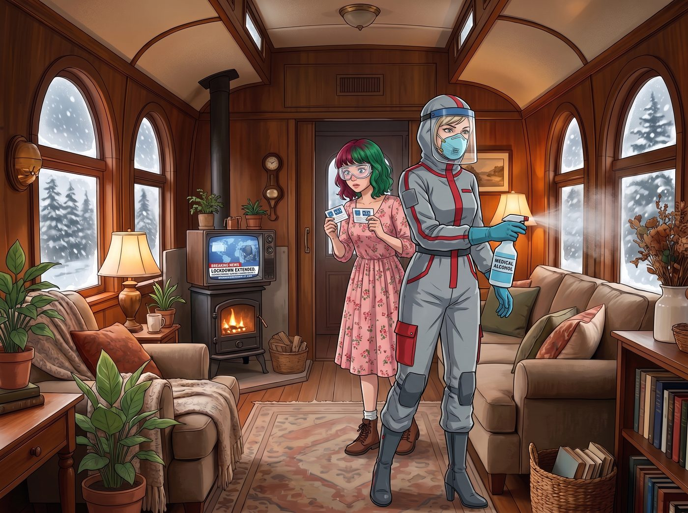
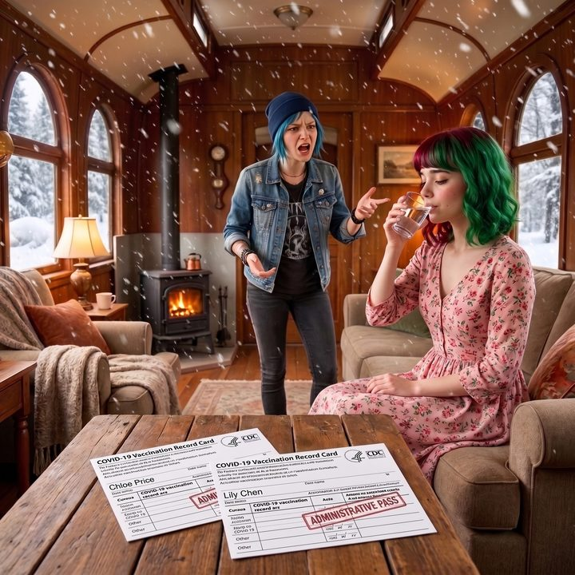

行政通行證


二號車廂外的奧林匹亞半島被一場罕見的大雪覆蓋，而電視螢幕裡輪播的，是延續了大半年、仍未見盡頭的封城與航班限制新聞，以及2020年底疫苗緊急授權上馬的最新消息。
伴隨著一陣刺鼻的醫用酒精噴霧味，車廂門被推開了。Victoria 穿著一整套訂製的防護服，臉上戴著N95口罩，踩著高跟鞋宛如巡視核災現場般走了進來。跟在她身後的 Lily 則依然是那副乖巧的模樣，只不過平時的圓框眼鏡換成了防飛沫護目鏡，手裡拿著兩張蓋著疾控中心鋼印的小卡片。
一、輝瑞VIP俱樂部
「消毒！把空氣清淨機開到最大！」Victoria 一邊脫下橡膠手套，一邊發出大小姐的指令，「天哪，甘迺迪機場簡直是個巨型培養皿，如果不是為了趕去蘇黎世簽那份信託轉讓協議，我這輩子都不想再坐民航客機了！」
躺在沙發上、正用一塊破布擦拭機油的 Chloe 翻了個巨大的白眼，將腳翹得老高。
「回來了啊，輝瑞VIP俱樂部的兩位白老鼠。」Chloe 嗤笑了一聲，指著電視上正在播放的新聞，「這玩意兒從病毒測序到打進妳們的靜脈裡，連十個月都不到。妳們這兩個精英階層難道不知道，人類歷史上任何一款正常疫苗的研發週期都是以十年為單位的嗎？妳們就這麼心甘情願地讓政府把這管還在Beta測試階段的液體打進身體裡？」
Victoria 瞪了 Chloe 一眼：「妳以為我想嗎？如果不打這兩針，歐盟的海關根本不讓我入境，我怎麼去處理那些即將暴跌的歐洲藝術品資產？這是通行證，妳這個連州界都沒出過的鄉巴佬是不會懂的。」
「通行證？這叫人體服從性測試。」Chloe 坐直了身子，拿出她在街頭混跡多年的叛逆精神，「我告訴妳們，我是絕對不會讓那群連路洞都補不好的政客，拿這種急速上馬的東西來扎我的。誰知道裡面有沒有微晶片，或者會不會在五年後讓我們全都變成會發光的喪屍？」
二、四種立場
正在廚房裡烤著無麩質麵包的 Kate 溫柔地轉過身，手裡拿著一個隔熱手套，輕聲說道：「可是 Chloe，我上週也去打了第一劑呀。社區中心的志工說，這樣可以建立群體免疫。雖然我也覺得研發速度快得有點不可思議，但如果這能保護那些容易感染的老人家，我覺得這點風險是可以承擔的。」
Chloe 頓時語塞。面對別人，她可以用一萬種陰謀論把對方噴得體無完膚；但面對 Kate 這種純粹出於善良和利他主義的動機，她的嘴砲技能就直接宣告當機了。
「Kate，妳……妳就是太善良了，政府就是利用了妳的同情心！」Chloe 煩躁地抓了抓藍色的短髮，轉頭看向正拿著拍立得相機記錄這場爭吵的 Max，「Max！妳總該站在我這邊吧？妳難道不覺得這一切都很詭異嗎？」
Max 放下相機，無奈地嘆了口氣。作為一個對世界充滿焦慮的千禧世代，她正夾在 Chloe 的硬核反叛和 Kate 的溫柔順從之間瘋狂拉扯。
「我……我還在觀望。」Max 猶豫地說，「Chloe 說的研發週期確實讓我很沒安全感，但我真的很想念去西雅圖看地下樂團Live的日子，雖然現在所有的Livehouse都倒閉了……如果打針是回到正常生活的唯一方法，我可能最後還是會妥協吧。」
「妥協就是屈服的第一步！」Chloe 痛心疾首。
三、行政DLC
就在這時，Lily 脫下了護目鏡，用隨身攜帶的酒精濕巾仔細擦拭著鏡片，然後重新戴上那副標誌性的圓框眼鏡。她走到 Chloe 面前，將那兩張疫苗接種卡平整地放在露營桌上。
「Chloe 學姐，您的邏輯出發點存在一個微小的偏差。」Lily 的聲音依然軟糯平靜，沒有任何情緒波動，「您在用醫學與公共衛生的視角來審視這款疫苗。但從合規與行政工程的角度來看，它根本不是一種醫療產品。」
Chloe 愣了一下：「那它是什麼？政府用來控制我們的納米機器人嗎？」
「不，政府的IT基礎設施還沒先進到能處理幾十億個納米晶片的數據吞吐量。」Lily 嚴謹地反駁了陰謀論，接著說道，「這管液體，本質上是一個全球旅行與商業活動的物理擴充包。」
Lily 推了推眼鏡，螢幕的微光照亮了她平靜的側臉：「您說得對，它的研發週期短得違反了醫學常理。但這並不重要。對於 Victoria 學姐的資產流動性和我們的信託架構來說，這只是一份不可抗力豁免憑證。我們購買的不是免疫力，而是跨越國境線的合法權限、是免於被強制隔離十四天的行政特權、是資產在疫情期間繼續運轉的潤滑劑。」
Lily 停頓了一下，用那雙深不見底的眼睛看著 Chloe：「這就像一款還沒修完Bug就強行上市的電子遊戲。您當然可以因為它充滿了漏洞而拒絕下載更新，堅守在您不需要聯網的單機世界裡——比如這個二號車廂。但對於需要連線登入全球資本伺服器的玩家來說，這份更新檔是強制安裝的。我們不在乎裡面有沒有Bug，我們只在乎不按同意就無法登入帳號。」
Chloe 被這番極度冰冷、極度實用主義的發言震懾住了。她以為自己是在對抗一個隱秘的醫學陰謀，結果 Lily 告訴她，這不過是一場粗暴的行政壟斷。
「所以……」Chloe 嚥了一口唾沫，「妳其實根本不在乎它安不安全？妳只是把它當成了一張特別難拿的簽證？」
「我評估了血栓和心肌炎的百萬分之幾的機率，並將其與 Victoria 學姐在歐洲滯留將造成的日均七萬美元資產蒸發率進行了加權對比。」Lily 露出了一個乖巧而無懈可擊的微笑，「結論是：哪怕這針打下去會讓我發燒三天，它所產生的行政與經濟收益也是絕對溢價的。這是一筆非常划算的肉體投資。」
Victoria 在一旁滿意地喝了一口熱水：「聽懂了嗎，Chloe？這叫風險對沖。只有妳這種連信用卡都沒有的人，才會有閒情逸致去關心疫苗的研發週期。」
Chloe 徹底無言以對。她煩躁地拿起扳手，轉身朝著車廂角落那台廢舊引擎走去，嘴裡嘟囔著：「一群被資本異化的瘋子……等哪天妳們長出第三隻手的時候，別指望我幫妳們剪指甲！」
Max 默默地舉起拍立得，咔嚓一聲，將桌上那兩張象徵著行政通行證的疫苗卡，以及背景裡罵罵咧咧的 Chloe 和正在優雅喝水的 Lily 拍了下來。照片緩緩吐出，在這個荒誕而割裂的2020年冬夜裡，定格成了一張名為《生存策略》的時代切片。